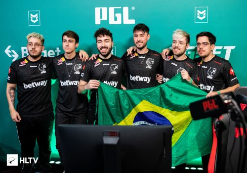
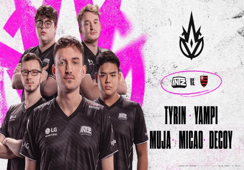
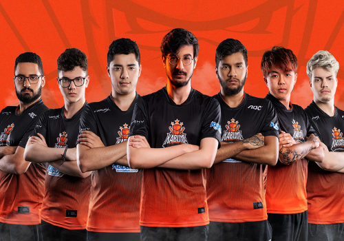
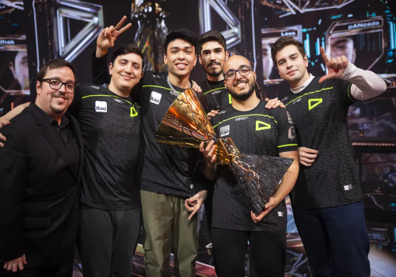
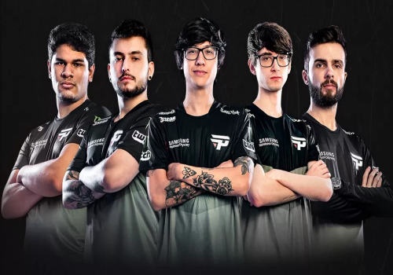

Principais Times do Brasil
Pequena contextualização desta lista
Abaixo citarei algumas das principais equipes de e-sports no Brasil, é importante citar que a lista não tem uma ordem exata, os times só estão separados por ordem alfabética, e também é importante deixar claro que todas essas equipes disputam em diversos jogos diferentes, porém só estarei citando os títulos dos jogos em que essas equipes são mais focadas, para não ficar uma lista gigantesca. Agora, sem mais demoras, vamos para a lista!
Black Dragons
A equipe “Black Dragons” é uma das mais antigas instituições de e-sports fundadas no Brasil, sendo criada em 1997. A equipe sempre teve um foco em jogos de FPS (First Person Shooter, os populares jogos de tiro em primeira pessoa). Em 2017 o time anunciou sua entrada no cenário competitivo do jogo “Rainbow Six”, que virou o foco principal da equipe, conquistando alguns títulos importantes. A equipe acumula mais de 75 mil seguidores no twitter e 258 mil no instagram.

Títulos Importantes (No Rainbow Six)
Pro League Year 2 Season 1 - Latin America (2017)
Brasileirão 2017 - Season 1
Pro League Year 2 Season 3 - Latin America (2017)
Copa do Brasil - Season 2021: Stage 3
FURIA
A “FURIA” é um dos times mais famosos do Brasil atualmente, principalmente por seus desempenhos em jogos de FPS, focado mais em “CS:GO”. O time chegou muito perto de vencer o Major de CS:GO de 2022 (primeiro realizado no Brasil, se quiser ver mais sobre esse campeonato vá ao cabeçalho em "Major de C.S. 2022"), caindo apenas nas semifinais. A equipe tem expressivos 530 mil seguidores no twitter e 598 mil no instagram.

Títulos Importantes (CS:GO)
ESL Brasil Premier League Season 5 (2018)
ESEA Season 30: Premier Division - North America (2019)
ESEA Season 31: Global Challenge (2019)
EMF CS:GO World Invitational 2019
Arctic Invitational 2019
DreamHack Masters Spring 2020: North America
DreamHack Open Summer 2020: North America
ESL Pro League Season 12: North America (2020)
Elisa Invitational Summer 2021
PGL Major Antwerp 2022: American RMR
INTZ
A INTZ foi fundada no Brás (bairro de SP) em 2014, e em pouco tempo foi crescendo cada vez mais. A equipe tem um foco maior no jogo League of Legends (LoL), que foi o jogo em que começaram no cenário competitivo. A INTZ foi escolhido pela Esports BAR (The World’s eSports Business Arena), que é o maior fórum de esportes eletrônicos do mundo, como uma das 8 melhores organizações do mundo em engajamento com a comunidade, ao lado de várias equipes famosas no mundo inteiro como Cloud9, FaZe Clan, Fnatic e 100 Thieves. Atualmente a equipe conta com 273 mil seguidores no twitter e incríveis 1,7 milhão no instagram.

Títulos Importantes (LoL)
CBLOL Summer 2015
CBLOL Summer 2016
CBLOL Winter 2016
IEM Season XI - Challenger (2016)
Superliga ABCDE Season 1 (2017)
Superliga ABCDE Season 2 (2018)
CBLOL Summer 2019
KaBuM eSports
A KaBuM eSports é uma equipe que foi formada pela loja online “KaBuM”, em 2013. Desde então, a equipe (também focada em LoL) conseguiu o feito de disputar dois mundiais de LoL, um feito até hoje nunca superado por nenhum outro time brasileiro. Apesar de nunca ter vencido o mundial (assim como todos os brasileiros em LoL) o time tem uma forte tradição em solo nacional. A equipe conta com 125 mil seguidores no twitter e 106 mil no instagram.

Títulos Importantes (LoL)
2014 Season Brazil Regional Finals
International Wildcard Tournament PAX 2014
BRCC Winter 2017
CBLOL Summer 2018
Rift Rivals 2018: LLN vs CLS vs CBLOL
CBLOL Winter 2018
CBLOL Summer 2020
LOUD
A LOUD é a equipe mais nova desta lista, tendo sido fundada em 2019. No início, o time só disputava em campeonatos de Free Fire, porém, a equipe foi expandindo para outros jogos. A equipe é muito nova, por isso é difícil listar os títulos importantes e até denominar um jogo em que a equipe tem um foco maior, porém pode se dizer que a equipe tem sido mais vitoriosa no Valorant, mesmo sendo o jogo mais recente que a equipe adentrou. A LOUD começou no Valorant em 2022, e já se sagrou campeã mundial, vencendo o Valorant Champions de 2022. A equipe também é bem focada em criação de conteúdo para as mídias sociais, tendo 1,6 milhão de seguidores no twitter e 11,6 milhões no instagram.

Títulos Importantes (Valorant)
VCT 2022: Brazil Stage 1 Challengers
VCT 2022: Brazil Stage 2 Challengers
VALORANT Champions 2022
paiN Gaming
A paiN Gaming foi fundada em 2010 e era inicialmente uma equipe focada em DOTA, porém, atualmente a equipe tem bem mais foco em LoL, entrando no competitivo de LoL em 2012. A equipe conta com 694 mil seguidores no twitter e 1,9 milhão de seguidores.

Títulos Importantes (LoL)
Riot Brazilian Champion League 2013
CBLOL Winter 2015
International Wildcard Tournament Chile 2015
Superliga ABCDE Season 3 (2019)
CBLOL Split 1 2021
RED Canids
Em dezembro de 2015, um time com o nome de “INTZ Red” foi adquirido por um grupo de investidores, e renomeado para “RED Canids”. Desde então, o time foi crescendo cada vez mais e hoje é um dos principais times brasileiros no cenário de LoL (como deve ter dado para perceber, o cenário de LoL no Brasil é bem grande). O time conta com mais de 193 mil seguidores no twitter e 340 mil no instagram.

Títulos Importantes (no LoL)
CBLOL Summer 2017
Rift Rivals 2017: LLN vs CLS vs CBLOL
BRCC Winter 2020
Liga Loading de eSports (2020)
CBLOL Split 2 2021
CBLOL Split 1 2022